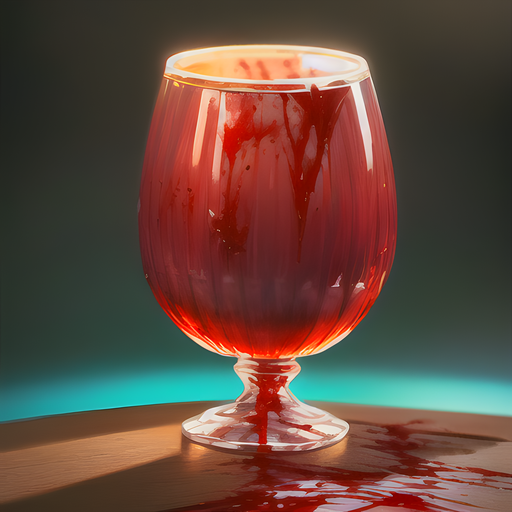

Les Nécromanciens
Les Nécromanciens

Dans l'univers d'Eternia, les nécromanciens sont des mages noirs qui ont développé des compétences uniques en matière de manipulation de la magie de la mort. Ils sont capables de ramener les morts à la vie, de contrôler les esprits et de lancer des malédictions dévastatrices sur leurs ennemis. Les nécromanciens ont étudié les arts sombres pendant des années pour atteindre leur niveau actuel de puissance. Leur pratique de la magie noire les a souvent mis en conflit avec les autres habitants d'Eternia, qui craignent leur pouvoir et leur capacité à causer des ravages dans les communautés locales. Cependant, les nécromanciens peuvent également être des alliés puissants, capables de ramener des soldats tombés au combat et de fournir des conseils et des connaissances précieuses sur les morts-vivants. Les nécromanciens sont des personnages mystérieux et souvent isolés, mais leur influence sur le monde d'Eternia ne doit pas être sous-estimée.
Spécificité de la classe : 5% de vitesse supplémentaire
L'Invocation de Zombie est une technique sombre et terrifiante que seul un nécromancien est capable d'exécuter. En invoquant un cadavre en putréfaction, le nécromancien peut infliger des dégâts considérables à son ennemi.
Lorsque l'Invocation de Zombie est utilisée, le sol se déchire et un cadavre en putréfaction surgit de sa tombe. Ce zombie se dirige ensuite lentement vers sa cible, offrant une vision terrifiante à l'ennemi qui peut être affecté psychologiquement. Puis, juste avant d'atteindre sa cible, le zombie explose en une gerbe de chair et de sang, infligeant des dégâts importants à l'ennemi.
Cette technique est particulièrement efficace contre les ennemis qui ont une faible défense ou qui ont des points de vie limités. Le nécromancien peut utiliser cette attaque pour infliger des dégâts massifs à un ennemi en un court laps de temps, en espérant le tuer rapidement.
Puissance : 50 | Recharge : 2 tours
La Marche des Morts est une technique utilisée par les nécromanciens pour ralentir les ennemis et leur infliger un sentiment de désespoir. En invoquant une vague de squelettes, le nécromancien est capable de réduire considérablement la vitesse de l'ennemi sur une longue durée.
Lorsque la Marche des Morts est invoquée, une horde de squelettes émerge des profondeurs de l'enfer, enveloppant l'ennemi dans un nuage de désolation et de désespoir. Les ennemis qui sont touchés par cette attaque sont ralentis, ce qui rend plus difficile pour eux de se déplacer ou d'attaquer efficacement.
En outre, la présence de la horde de squelettes peut également avoir un effet psychologique sur l'ennemi, sapant leur confiance en eux-mêmes et leur moral. Cela peut donner un avantage psychologique à l'équipe du nécromancien, leur permettant de prendre l'ascendant sur l'ennemi.
Cette technique est particulièrement utile lorsque le nécromancien est confronté à des ennemis rapides ou agiles, ou lorsqu'il doit protéger ses alliés contre des attaques ennemies. En ralentissant l'ennemi, le nécromancien peut empêcher les ennemis d'attaquer efficacement ou de fuir, permettant à son équipe de les vaincre plus facilement.
Effet : -30% vitesse ennemie (4 tours) | Recharge : 3 tours
La Malédiction est une attaque redoutable que les nécromanciens peuvent utiliser pour affaiblir leurs ennemis. Lorsqu'elle est invoquée, des serpents de fumée noire surgissent de nulle part pour mordre l'ennemi, injectant un venin qui va progressivement le ronger de l'intérieur.
La victime est laissée à la merci de la malédiction, qui va l'affaiblir et le rendre vulnérable aux attaques ennemies. La douleur provoquée par la malédiction peut être intense et peut affecter la capacité de l'ennemi à se battre efficacement.
Bien que l'effet de la malédiction soit temporaire, il peut donner un avantage significatif aux nécromanciens sur le champ de bataille. En affaiblissant les ennemis, ils peuvent mieux les contrôler et les manipuler pour leur propre avantage.
Effet : 25 dégâts (3 tours) | Recharge : 3 tours

Le Sacrifice est une technique délicate et puissante utilisée par les nécromanciens pour se régénérer en puisant dans les forces de la mort. Pour réaliser cette attaque, le nécromancien doit sacrifier une partie de sa propre vie pour restaurer sa santé et renforcer sa magie.
Lorsque le sort est invoqué, une aura sombre enveloppe le nécromancien, et il commence à prélever l'énergie vitale de ceux qui sont sous son contrôle. Les cadavres réanimés sous son emprise sont soumis à une douleur insupportable alors que leur force vitale est aspirée pour recharger le nécromancien.
Les morts-vivants en question sont soumis à la volonté du nécromancien, sans aucun contrôle sur leur propre existence. Ils sont incapables de résister à la douleur, même si cela signifie leur propre mort. Cependant, cette technique n'est pas sans risque pour le nécromancien, car s'il utilise trop souvent ce sort, il risque de perdre complètement son humanité.
Malgré les risques, les nécromanciens sont souvent prêts à utiliser cette technique pour renforcer leur magie et leur santé. Avec une régénération rapide de leur énergie vitale, ils peuvent continuer à lancer des sorts dévastateurs sur leurs ennemis, les tuant rapidement avant qu'ils ne puissent réagir.
En plus de ses avantages en combat, le sort de Sacrifice peut également être utilisé pour renforcer la magie du nécromancien lors de rituels occultes. La mort est souvent considérée comme un pouvoir sombre et tabou, mais pour les nécromanciens, c'est une source de puissance incroyable qui peut être utilisée pour leur propre bénéfice.
Effets : soigne 30 PV +20 pv (2 tours) | Recharge : 4 tours
Le Drain de vie est une attaque incroyablement puissante que seul un nécromancien peut invoquer. En étendant sa main vers son ennemi, le nécromancien libère une énergie sombre qui envahit le corps de sa victime. Cette énergie s'infiltre en elle et commence immédiatement à aspirer sa vitalité, sa santé, sa force, et tout ce qui la maintient en vie. Cette attaque est capable de voler la santé de l'ennemi, ce qui en fait l'une des attaques les plus dévastatrices de l'arsenal du nécromancien.
En plus de voler une quantité considérable de vitalité, le Drain de vie a également des effets positifs pour le nécromancien. En aspirant la vie de son ennemi, le nécromancien se régénère de manière significative, récupérant une partie de la santé qu'il a volée. Cette capacité à se soigner tout en infligeant des dégâts est une arme redoutable sur le champ de bataille, permettant au nécromancien de tenir plus longtemps dans les combats difficiles.
Mais ce n'est pas tout. Le Drain de vie peut également être utilisé pour épuiser rapidement la santé de l'ennemi, le laissant affaibli et vulnérable. En réduisant la santé de l'ennemi, le nécromancien peut augmenter considérablement ses chances de remporter la victoire dans un combat.
De plus, le Drain de vie est une attaque particulièrement utile contre les ennemis qui ont une forte résistance aux dégâts. En volant directement la santé de l'ennemi, le nécromancien peut ignorer complètement la résistance aux dégâts et infliger des dommages significatifs. Cette capacité peut être cruciale lors de combats contre des ennemis très résistants, tels que les golems ou les créatures en armure lourde.
Effets : vole de 60 PV à l'ennemi | Recharge : 5 tours